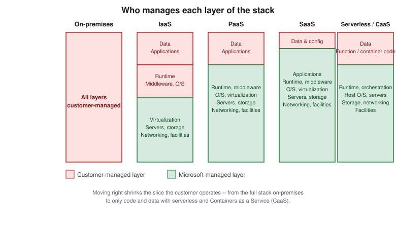
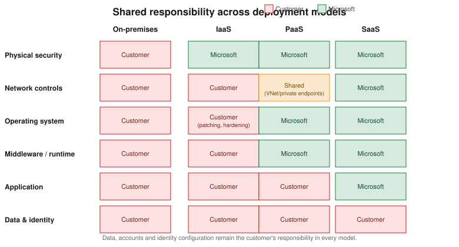

Cloud Concepts
|
This content was generated with the assistance of AI and should be verified against the official documentation before being relied on in production. |
This page is the conceptual foundation for the rest of the Cloud / Azure section: what cloud computing actually changes versus running your own virtualized infrastructure, the benefits providers advertise and what they mean in practice, the IaaS/PaaS/SaaS/serverless service models, the shared responsibility model that determines who patches what, the four deployment models, and the CapEx-vs-OpEx pricing shift. It is almost entirely conceptual, so it has few commands of its own; where later pages act on these ideas with the Azure CLI, they target the same baseline as the rest of this section: Azure CLI 2.90.0, Bicep 0.47.16 and azd 1.34.2.
What cloud computing is
Cloud computing is the on-demand delivery of compute, storage, networking, databases and higher-level services over the internet, billed for what is actually consumed rather than purchased as fixed capacity ahead of time. A provider such as Microsoft Azure operates the physical data centers, and customers provision resources through an API, a command-line tool or a portal, typically within minutes.
Cloud vs. virtualization
Virtualization — running multiple virtual machines on one physical host via a hypervisor — is a technology the cloud is built on, not the cloud itself. A company can virtualize its own on-premises servers with VMware or Hyper-V and get better hardware utilization, but it still owns the racks, the data center, the power and cooling, and the staff who patch the hypervisor at 2 a.m. Cloud computing adds, on top of virtualization: self-service provisioning (no ticket to a systems administrator), rapid elastic scaling, metered consumption-based billing, and a provider that owns the physical layer entirely. In short: virtualization is how the resources are carved up; cloud is who owns and operates that layer and how it is consumed and paid for.
Benefits
- High availability & SLAs
-
Azure publishes Service Level Agreements (SLAs) per service — for example a percentage-uptime guarantee for a given redundancy configuration — with service credits if the target is missed. High availability is achieved through redundancy: multiple instances, availability zones and paired regions so a single hardware failure, or even a whole data center outage, does not take the application down.
- Scalability
-
The ability to add capacity to meet demand. Vertical scaling ("scaling up") means moving a resource to a larger size — more CPU/RAM on the same virtual machine, for example — and has a ceiling (the largest available SKU) plus usually a restart. Horizontal scaling ("scaling out") means adding more instances behind a load balancer, which has a much higher ceiling and no downtime, at the cost of needing the application to be stateless or session-aware across instances.
- Elasticity
-
The automated version of horizontal scaling: capacity expands and contracts automatically as load rises and falls — for example an autoscale rule that adds virtual machine instances above 70% CPU and removes them again once load drops — so the customer pays only for capacity that is actually in use at each moment, rather than provisioning for peak load year-round.
- Reliability
-
The ability of a system to recover from failures and keep functioning, addressed through redundancy, health probes and automated failover, and measured separately from raw uptime through the achieved recovery time objective (RTO) and recovery point objective (RPO) in an actual incident.
- Performance & cost predictability
-
Pay-as-you-go consumption pricing (covered in more detail below) replaces large upfront hardware purchases with a variable operating cost, while reservations and savings plans let a customer trade flexibility for a discount once usage patterns stabilize.
- Security
-
The provider invests in physical security, DDoS protection at the network edge and a large security engineering team that a single company rarely can, but security within the cloud remains the customer’s job — see the shared responsibility model below.
- Governance
-
Azure Policy, management groups and blueprints let an organization enforce and audit rules (allowed regions, allowed SKUs, mandatory tags, encryption requirements) centrally across every subscription, instead of relying on manual review of each server.
- Manageability
-
Often summarized as "management of the cloud" versus "management in the cloud." Management of the cloud covers governance-level tasks: assigning role-based access control, setting budgets and alerts, applying policies. Management in the cloud covers day-to-day operational tasks inside a deployed resource: configuring an application, deploying code, monitoring an individual virtual machine’s disk usage.
Service models
- IaaS (Infrastructure as a Service)
-
The provider supplies virtual machines, virtual networks and storage; the customer manages the operating system upward — patching, runtime, application and data. Closest to running your own hardware, with the most control and the most operational responsibility. Example: an Azure Virtual Machine.
- PaaS (Platform as a Service)
-
The provider also manages the operating system, runtime and middleware; the customer deploys application code and data and configures the platform’s settings. Less operational burden, less low-level control. Example: Azure App Service or Azure SQL Database.
- SaaS (Software as a Service)
-
The provider runs the entire application; the customer only configures it and supplies data. Example: Microsoft 365.
A rough way to picture the trade-off: IaaS is like leasing a vehicle and doing your own maintenance and fueling; PaaS is like a car with a maintenance plan bundled in, where you still choose where to drive; SaaS is like hailing a ride and letting someone else worry about the vehicle entirely. Each step trades control for reduced operational effort.
Two further models sit at the far end of that spectrum:
- Serverless
-
The customer supplies only a function’s code (for example on Azure Functions); the platform provisions, scales and tears down the underlying compute automatically, including scaling to zero when idle, and billing is per execution/consumption rather than per allocated instance.
- Containers as a Service (CaaS)
-
The customer supplies a container image; the platform (for example Azure Container Apps or Azure Kubernetes Service in its managed-control-plane form) handles scheduling, scaling and the underlying host operating system, while the customer still owns everything packaged inside the container image.

The shared responsibility model
The shared responsibility model states exactly which layer of the stack the customer is accountable for and which layer Microsoft is accountable for, and it shifts as a workload moves from on-premises through IaaS and PaaS to SaaS. Physical security, the underlying network fabric and the physical hosts are Microsoft’s responsibility in every cloud model; data, accounts, endpoint devices and identity configuration remain the customer’s responsibility in every model, including SaaS. What moves between the two extremes is everything in between: operating-system patching, middleware, and application-layer configuration.
Concretely: on an IaaS virtual machine the customer is responsible for applying operating-system security patches, configuring the guest firewall, and managing which identities can log in to the box. On a PaaS service such as Azure SQL Database, Microsoft patches the underlying database engine and operating system, while the customer is still responsible for the data itself, who is authorized to access it (via Microsoft Entra ID role assignments), and whether transparent data encryption or customer-managed keys are enabled. On a SaaS product such as Microsoft 365, Microsoft operates essentially the entire stack, and the customer’s residual responsibility is narrow but never zero: data classification, user access management, and endpoint device compliance.

Identity is worth calling out on its own: regardless of service model, Microsoft Entra ID (the identity platform covered in Identity and Access) is how the customer proves who is allowed to do what, and misconfigured identity is one of the few responsibility-model failures that no amount of provider-side security investment can compensate for.
Deployment models
- Public cloud
-
Resources run on infrastructure owned and operated by the provider and shared, at the virtualization layer, among multiple customers — the default and lowest-friction Azure deployment model.
- Private cloud
-
Infrastructure dedicated to a single organization, whether run in that organization’s own data center or as a dedicated deployment (for example Azure Local, formerly Azure Stack HCI); higher control and compliance posture at the cost of the operational burden the public cloud is designed to remove.
- Hybrid cloud
-
A deliberate mix of on-premises/private and public cloud, connected (for example via Azure ExpressRoute or a site-to-site VPN) so workloads and data move between the two, often used to keep sensitive data on-premises while bursting compute to the cloud.
- Multi-cloud
-
Deliberately running workloads across more than one public cloud provider (for example Azure and AWS), usually to avoid a single vendor’s regional footprint, pricing, or outage risk, at the cost of duplicated tooling and expertise.
CapEx vs. OpEx and consumption-based pricing
Running your own data center is capital expenditure (CapEx): large upfront purchases of hardware that is then depreciated over years, sized for anticipated peak load that may never fully materialize, and difficult to resize once purchased. Cloud consumption is treated as operating expenditure (OpEx): an ongoing, variable cost that scales with actual usage, with no large upfront purchase and no hardware to depreciate or dispose of at end of life.
Azure’s consumption-based pricing follows from this: most services bill per second or per hour of usage, per gigabyte stored, or per operation/transaction, and a workload that is deleted stops accruing cost immediately. Reservations and savings plans let a customer commit to a baseline of usage for one or three years in exchange for a discount, trading some of that flexibility back for a lower rate once usage is predictable — a middle ground between pure OpEx and the discount that a CapEx-style upfront commitment would have earned.
Where to go from here
The rest of this section builds on these concepts with hands-on Azure material:
| Page | Covers |
|---|---|
Creating an account, the Azure portal, Cloud Shell and installing/configuring the Azure CLI and azd. |
|
Regions, availability zones, region pairs and how to choose a region. |
|
Management groups, subscriptions, resource groups, tags and naming conventions. |
|
Microsoft Entra ID, role-based access control (RBAC), managed identities and Conditional Access. |
|
Bicep, ARM templates and Terraform for repeatable, version-controlled deployments. |